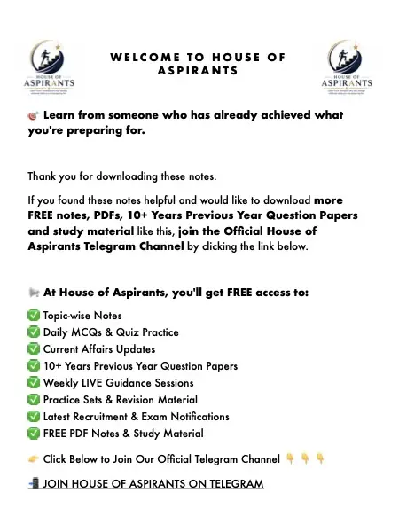

Finished reading? Check what you remember with a quick MCQ test.

Summary
CHAPTER 2 Expansion of British Power in India (Part 2) Conquest of Mysore Introduction Mysore was one of the strongest Indian kingdoms that challenged the British in South India. The struggle between the British and Mysore was fought through four Anglo-Mysore Wars. These wars fifinally ended with
Download
Download Expansion of British Power - Part 2 (English) (PDF) - 1.6 MB, 7 pages, hosted on this site. No sign-up, no email wall and no redirect through a third party.
About this file
- File name:
expansion-of-british-power-part-2-en.pdf - Pages: 7
- Size: 1.6 MB
- Published: 3 October 2026
- Filed under: Study Material
Where this file sits
- Subject: History
- Language: English
- Chapter: Expansion of British Power
- Part: Part 2 of 6
This page was generated automatically from content/study-material/history/english/expansion-of-british-power/. Its subject, language and chapter come from the folders the file sits in, its part number from its place among the files beside it, and its title, slug and description from those. The page count and the summary were read out of the PDF itself - the file is the document.